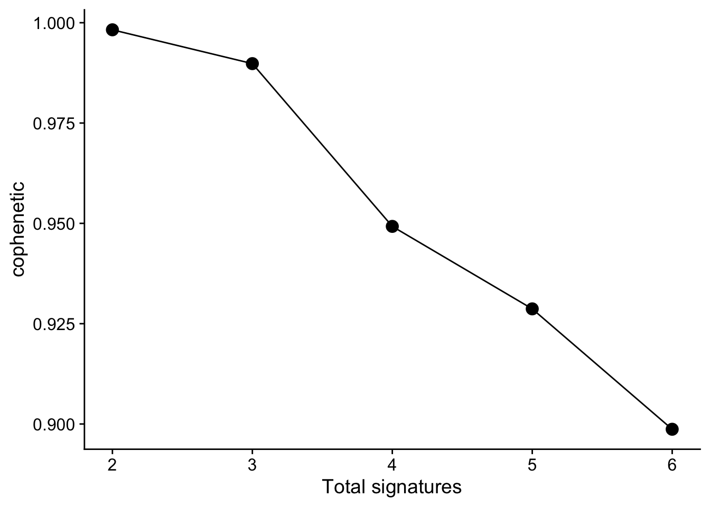

Chapter 2 COSMIC Signature Identification
In this chapter, we will introduce how to identify COSMIC signatures from records of variant calling data. The COSMIC signatures include three type of signatures: SBS, DBS and ID (short for INDEL).
The signature identification procedure has been divided into 3 steps:
- Read mutation data.
- Tally components: for SBS, it means classifying SBS records into 96 components (the most common case) and generate sample matrix.
- Extract signatures: estimate signature number and identify signatures.
2.1 Read Data
Make sure
library(sigminer)before running the following code.
The input data should be in VCF, MAF format.
- For VCF, it can only be VCF file paths.
- For MAF, it can be either a MAF file or a
data.frame.
MAF format is the standard way to represent small-scale variants in Sigminer. There is a popular R/Bioconductor package maftools (Mayakonda et al. 2018) for analyzing MAF data. It provides an R class MAF to represent MAF format data.
2.1.1 VCF as input
If you use VCF files as input, you can use read_vcf() to read multiple VCF files as a MAF object.
vcfs <- list.files(system.file("extdata", package = "sigminer"), "*.vcf", full.names = TRUE)
maf <- read_vcf(vcfs)
#> Reading file(s): /Users/wsx/Library/R/sigminer/extdata/test1.vcf, /Users/wsx/Library/R/sigminer/extdata/test2.vcf, /Users/wsx/Library/R/sigminer/extdata/test3.vcf
#> Annotating Variant Type...
#> Annotating mutations to first matched gene based on database /Users/wsx/Library/R/sigminer/extdata/human_hg19_gene_info.rds...
#> Transforming into a MAF object...
#> -Validating
#> --Non MAF specific values in Variant_Classification column:
#> Unknown
#> -Summarizing
#> -Processing clinical data
#> --Missing clinical data
#> -Finished in 0.056s elapsed (0.036s cpu)
maf <- read_vcf(vcfs, keep_only_pass = FALSE)
#> Reading file(s): /Users/wsx/Library/R/sigminer/extdata/test1.vcf, /Users/wsx/Library/R/sigminer/extdata/test2.vcf, /Users/wsx/Library/R/sigminer/extdata/test3.vcf
#> Annotating Variant Type...
#> Annotating mutations to first matched gene based on database /Users/wsx/Library/R/sigminer/extdata/human_hg19_gene_info.rds...
#> Transforming into a MAF object...
#> -Validating
#> --Non MAF specific values in Variant_Classification column:
#> Unknown
#> -Summarizing
#> -Processing clinical data
#> --Missing clinical data
#> -Finished in 0.035s elapsed (0.033s cpu)2.1.2 MAF as input
MAF format is the most recommended input, you can provides it either as a file or as a data.frame.
Typically, you can obtain the data in the following ways:
- You get multiple VCF files and convert them into a MAF file (vcf2maf is the most used tool for conversion).
- You get a MAF file from a reference or a public data portal, e.g., cBioPortal or GDC portal.
- You get a EXCEL file providing MAF-like data from a reference, you should read the data firstly (with
readxl::read_excel()) and then construct adata.frameproviding necessary columns.
Once a MAF file or a MAF-like data.frame is ready, you can read/convert it as a MAF object with read_maf(). Here TCGA LAML dataset is used as an example:
laml.maf <- system.file("extdata", "tcga_laml.maf.gz", package = "maftools", mustWork = TRUE)
laml <- read_maf(maf = laml.maf)
#> -Reading
#> -Validating
#> -Silent variants: 475
#> -Summarizing
#> -Processing clinical data
#> --Missing clinical data
#> -Finished in 0.656s elapsed (0.346s cpu)
laml
#> An object of class MAF
#> ID summary Mean Median
#> 1: NCBI_Build 37 NA NA
#> 2: Center genome.wustl.edu NA NA
#> 3: Samples 193 NA NA
#> 4: nGenes 1241 NA NA
#> 5: Frame_Shift_Del 52 0.269 0
#> 6: Frame_Shift_Ins 91 0.472 0
#> 7: In_Frame_Del 10 0.052 0
#> 8: In_Frame_Ins 42 0.218 0
#> 9: Missense_Mutation 1342 6.953 7
#> 10: Nonsense_Mutation 103 0.534 0
#> 11: Splice_Site 92 0.477 0
#> 12: total 1732 8.974 9The laml is a MAF object. The MAF class is exported from maftools to sigminer. So laml can be directly use functions provided by maftools.
As a MAF object, the mutation records are stored in slot data and maf.silent.
head(laml@data)
#> Hugo_Symbol Entrez_Gene_Id Center NCBI_Build Chromosome Start_Position End_Position
#> 1: ABCA10 10349 genome.wustl.edu 37 17 67170917 67170917
#> 2: ABCA4 24 genome.wustl.edu 37 1 94490594 94490594
#> 3: ABCB11 8647 genome.wustl.edu 37 2 169780250 169780250
#> 4: ABCC3 8714 genome.wustl.edu 37 17 48760974 48760974
#> 5: ABCF1 23 genome.wustl.edu 37 6 30554429 30554429
#> 6: ABCG4 64137 genome.wustl.edu 37 11 119031351 119031351
#> Strand Variant_Classification Variant_Type Reference_Allele Tumor_Seq_Allele1
#> 1: + Splice_Site SNP T T
#> 2: + Missense_Mutation SNP C C
#> 3: + Missense_Mutation SNP G G
#> 4: + Missense_Mutation SNP C C
#> 5: + Missense_Mutation SNP G G
#> 6: + Missense_Mutation SNP A A
#> Tumor_Seq_Allele2 Tumor_Sample_Barcode Protein_Change i_TumorVAF_WU i_transcript_name
#> 1: C TCGA-AB-2988 p.K960R 45.66000 NM_080282.3
#> 2: T TCGA-AB-2869 p.R1517H 38.12000 NM_000350.2
#> 3: A TCGA-AB-3009 p.A1283V 46.97218 NM_003742.2
#> 4: T TCGA-AB-2887 p.P1271S 56.41000 NM_003786.1
#> 5: A TCGA-AB-2920 p.G658S 40.95000 NM_001025091.1
#> 6: G TCGA-AB-2934 p.Y567C 32.84000 NM_022169.1
head(laml@maf.silent)
#> Hugo_Symbol Entrez_Gene_Id Center NCBI_Build Chromosome Start_Position End_Position
#> 1: ABCC11 85320 genome.wustl.edu 37 16 48244997 48244997
#> 2: ACAN 176 genome.wustl.edu 37 15 89401084 89401084
#> 3: ACAT1 38 genome.wustl.edu 37 11 108009744 108009744
#> 4: ACCN2 41 genome.wustl.edu 37 12 50452780 50452780
#> 5: ACTA2 59 genome.wustl.edu 37 10 90695109 90695109
#> 6: ACTL9 284382 genome.wustl.edu 37 19 8808551 8808551
#> Strand Variant_Classification Variant_Type Reference_Allele Tumor_Seq_Allele1
#> 1: + Silent SNP G G
#> 2: + Silent SNP C C
#> 3: + Silent SNP T T
#> 4: + Silent SNP C C
#> 5: + Silent SNP C C
#> 6: + Silent SNP G G
#> Tumor_Seq_Allele2 Tumor_Sample_Barcode Protein_Change i_TumorVAF_WU i_transcript_name
#> 1: A TCGA-AB-2830 p.I490I 34.2700000 NM_032583.3
#> 2: T TCGA-AB-2898 p.S1756S 38.3000000 NM_013227.2
#> 3: G TCGA-AB-2887 p.T185T 49.0400000 NM_000019.3
#> 4: G TCGA-AB-3009 p.L77L 48.1000000 NM_020039.2
#> 5: T TCGA-AB-2973 p.P335P 0.2012072 NM_001613.1
#> 6: A TCGA-AB-2936 p.F167F 46.1500000 NM_178525.3The data slot contains non-silent variants, and the maf.silent slot contains silent variants.
Default uses Variant Classifications with High/Moderate variant consequences as non-silent variants. http://asia.ensembl.org/Help/Glossary?id=535: “Frame_Shift_Del”, “Frame_Shift_Ins”, “Splice_Site”, “Translation_Start_Site”,“Nonsense_Mutation”, “Nonstop_Mutation”, “In_Frame_Del”,“In_Frame_Ins”, “Missense_Mutation” (see ?read_maf). If you want to change, please set vc_nonSyn option.
Other slots in MAF object are summary data either by sample or gene/variant type etc.
slotNames(laml)
#> [1] "data" "variants.per.sample"
#> [3] "variant.type.summary" "variant.classification.summary"
#> [5] "gene.summary" "summary"
#> [7] "maf.silent" "clinical.data"Acute myeloid leukemia is not a good object to study mutational signatures due to low mutation burden, we will use a subset of TCGA breast cohort as for illustration of the following analyses.
Anand Mayakonda has already stored whole TCGA mutation data as MAF objects in TCGAmutations package. Here I will load the TCGA BRCA cohort and create a sub-cohort with 100 tumors.
| Study_Abbreviation | Study_Name | MC3 | Firehose |
|---|---|---|---|
| ACC | Adrenocortical_carcinoma | 92 | 62 [dx.doi.org/10.7908/C1610ZNC] |
| BLCA | Bladder_Urothelial_Carcinoma | 411 | 395 [dx.doi.org/10.7908/C1MW2GGF] |
| BRCA | Breast_invasive_carcinoma | 1020 | 978 [dx.doi.org/10.7908/C1TB167Z] |
| CESC | Cervical_squamous_cell_carcinoma_and_endocervical_adenocarcinoma | 289 | 194 [dx.doi.org/10.7908/C1MG7NV6] |
| CHOL | Cholangiocarcinoma | 36 | 35 [dx.doi.org/10.7908/C1K936V8] |
| COAD | Colon_adenocarcinoma | 404 | 367 [dx.doi.org/10.7908/C1DF6QJD] |
| DLBC | Lymphoid_Neoplasm_Diffuse_Large_B-cell_Lymphoma | 37 | 48 [dx.doi.org/10.7908/C1X066DK] |
| ESCA | Esophageal_carcinoma | 184 | 185 [dx.doi.org/10.7908/C1BV7FZC] |
| GBM | Glioblastoma_multiforme | 390 | 283 [dx.doi.org/10.7908/C1XG9QGN] |
| HNSC | Head_and_Neck_squamous_cell_carcinoma | 507 | 511 [dx.doi.org/10.7908/C18C9VM5] |
| KICH | Kidney_Chromophobe | 66 | 66 [dx.doi.org/10.7908/C1765DQK] |
| KIRC | Kidney_renal_clear_cell_carcinoma | 369 | 476 [dx.doi.org/10.7908/C10864RM] |
| KIRP | Kidney_renal_papillary_cell_carcinoma | 281 | 282 [dx.doi.org/10.7908/C19C6WTF] |
| LAML | Acute_Myeloid_Leukemia | 140 | 193 [dx.doi.org/10.7908/C1D21X2X] |
| LGG | Brain_Lower_Grade_Glioma | 511 | 516 [dx.doi.org/10.7908/C1MC8ZDF] |
| LIHC | Liver_hepatocellular_carcinoma | 363 | 373 [dx.doi.org/10.7908/C128070B] |
| LUAD | Lung_adenocarcinoma | 515 | 533 [dx.doi.org/10.7908/C17P8XT3] |
| LUSC | Lung_squamous_cell_carcinoma | 485 | 178 [dx.doi.org/10.7908/C1X34WXV] |
| MESO | Mesothelioma | 82 | NA |
| OV | Ovarian_serous_cystadenocarcinoma | 411 | 466 [dx.doi.org/10.7908/C1736QC5] |
| PAAD | Pancreatic_adenocarcinoma | 177 | 126 [dx.doi.org/10.7908/C1513XNS] |
| PCPG | Pheochromocytoma_and_Paraganglioma | 179 | 179 [dx.doi.org/10.7908/C13T9GN0] |
| PRAD | Prostate_adenocarcinoma | 497 | 498 [dx.doi.org/10.7908/C1Z037MV] |
| READ | Rectum_adenocarcinoma | 149 | 122 [dx.doi.org/10.7908/C1S46RDB] |
| SARC | Sarcoma | 236 | 247 [dx.doi.org/10.7908/C137785M] |
| SKCM | Skin_Cutaneous_Melanoma | 466 | 290 [dx.doi.org/10.7908/C1J67GCG] |
| STAD | Stomach_adenocarcinoma | 439 | 393 [dx.doi.org/10.7908/C1C828SM] |
| TGCT | Testicular_Germ_Cell_Tumors | 129 | 147 [dx.doi.org/10.7908/C1S1820D] |
| THCA | Thyroid_carcinoma | 492 | 496 [dx.doi.org/10.7908/C16W99KN] |
| THYM | Thymoma | 123 | 120 [dx.doi.org/10.7908/C15T3JZ6] |
| UCEC | Uterine_Corpus_Endometrial_Carcinoma | 530 | 248 [dx.doi.org/10.7908/C1C828T2] |
| UCS | Uterine_Carcinosarcoma | 57 | 57 [dx.doi.org/10.7908/C1PC31W8] |
| UVM | Uveal_Melanoma | 80 | 80 [dx.doi.org/10.7908/C1S1821V] |
| Unknown | Samples_I_couldnt_figure_out_the_source | 77 | NA |
set.seed(1234)
brca <- tcga_load("BRCA")
brca <- maftools::subsetMaf(brca,
tsb = as.character(sample(brca@variants.per.sample$Tumor_Sample_Barcode, 100))
)
saveRDS(brca, file = "data/brca.rds")Here we save this cohort to let user can also run the examples without installing package TCGAmutations.
2.2 Tally Components
2.2.1 The most common 96 components
According to 3-nucleotide context (mutated base, 5’ and 3’ adjacent bases) and base complementary pairing principle, we can divide all SBS mutations into 96 mutation types. We call each mutation type as a component here.
This classification is based the six substitution subtypes: C>A, C>G, C>T, T>A, T>C, and T>G (all substitutions are referred to by the pyrimidine of the mutated Watson—Crick base pair). Further, each of the substitutions is examined by incorporating information on the bases immediately 5’ and 3’ to each mutated base generating 96 possible mutation types (6 types of substitution x 4 types of 5’ base x 4 types of 3’ base).
Figure 2.1: The illustration of 96 components, fig source: https://en.wikipedia.org/wiki/Mutational_signatures
We tally components in each sample, and generate a sample-by-component matrix.
mt_tally <- sig_tally(
brca,
ref_genome = "BSgenome.Hsapiens.UCSC.hg19",
useSyn = TRUE
)
#> [36mℹ[39m [2020-10-08 18:00:49]: Started.
#> [32m✓[39m [2020-10-08 18:00:49]: Reference genome loaded.
#> [32m✓[39m [2020-10-08 18:00:49]: Variants from MAF object queried.
#> [32m✓[39m [2020-10-08 18:00:50]: Chromosome names checked.
#> [32m✓[39m [2020-10-08 18:00:50]: Sex chromosomes properly handled.
#> [32m✓[39m [2020-10-08 18:00:50]: Only variants located in standard chromosomes (1:22, X, Y, M/MT) are kept.
#> [32m✓[39m [2020-10-08 18:00:50]: Variant start and end position checked.
#> [32m✓[39m [2020-10-08 18:00:50]: Variant data for matrix generation preprocessed.
#> [36mℹ[39m [2020-10-08 18:00:50]: SBS matrix generation - start.
#> [36mℹ[39m [2020-10-08 18:00:50]: Extracting 5' and 3' adjacent bases.
#> [36mℹ[39m [2020-10-08 18:00:53]: Extracting +/- 20bp around mutated bases for background C>T estimation.
#> [36mℹ[39m [2020-10-08 18:00:53]: Estimating APOBEC enrichment scores.
#> [36mℹ[39m [2020-10-08 18:00:53]: Performing one-way Fisher's test for APOBEC enrichment.
#> [32m✓[39m [2020-10-08 18:00:53]: APOBEC related mutations are enriched in 28% of samples (APOBEC enrichment score > 2; 28 of 100 samples)
#> [36mℹ[39m [2020-10-08 18:00:53]: Creating SBS sample-by-component matrices.
#> [32m✓[39m [2020-10-08 18:00:53]: SBS-6 matrix created.
#> [32m✓[39m [2020-10-08 18:00:53]: SBS-96 matrix created.
#> [32m✓[39m [2020-10-08 18:00:53]: SBS-1536 matrix created.
#> [36mℹ[39m [2020-10-08 18:00:53]: Return SBS-96 as major matrix.
#> [32m✓[39m [2020-10-08 18:00:53]: Done.
#> [36mℹ[39m [2020-10-08 18:00:53]: 3.932 secs elapsed.Here set
useSyn = TRUEto include all variant records in MAF object to generate sample matrix.
mt_tally$nmf_matrix[1:5, 1:5]
#> A[T>C]A C[T>C]A G[T>C]A T[T>C]A A[C>T]A
#> TCGA-A1-A0SH-01A-11D-A099-09 0 0 1 1 0
#> TCGA-A2-A04N-01A-11D-A10Y-09 0 0 0 1 2
#> TCGA-A2-A0CP-01A-11W-A050-09 0 0 0 0 0
#> TCGA-A2-A0EP-01A-52D-A22X-09 0 0 1 0 0
#> TCGA-A2-A0EV-01A-11W-A050-09 0 0 1 0 0We use notion left[ref>mut]right to mark each component, e.g. C[T>G]A means a base T with 5’ adjacent base C and 3’ adjacent base A is mutated to base G.
2.2.2 Other Situations
Above we show the most common SBS classifications, there are other situations supported by sigminer, including other classifications for SBS records and other mutation types (DBS and ID). All situations about SBS, DBS and ID signatures are well documented in wiki of SigProfilerMatrixGenerator package.
2.2.2.1 Other SBS classifications
After calling sig_tally(), the most used matrix is stored in nmf_matrix, and all matrices generated by sigminer are stored in all_matrices.
str(mt_tally$all_matrices, max.level = 1)
#> List of 3
#> $ SBS_6 : int [1:100, 1:6] 7 6 5 4 9 7 5 5 0 5 ...
#> ..- attr(*, "dimnames")=List of 2
#> $ SBS_96 : int [1:100, 1:96] 0 0 0 0 0 0 1 2 0 0 ...
#> ..- attr(*, "dimnames")=List of 2
#> $ SBS_1536: int [1:100, 1:1536] 0 0 0 0 0 0 0 0 0 0 ...
#> ..- attr(*, "dimnames")=List of 2If you add the strand classification, all matrices can be generated by sigminer will return.
mt_tally2 <- sig_tally(
brca,
ref_genome = "BSgenome.Hsapiens.UCSC.hg19",
useSyn = TRUE, add_trans_bias = TRUE
)
#> [36mℹ[39m [2020-10-08 18:00:53]: Started.
#> [32m✓[39m [2020-10-08 18:00:53]: Reference genome loaded.
#> [32m✓[39m [2020-10-08 18:00:53]: Variants from MAF object queried.
#> [32m✓[39m [2020-10-08 18:00:53]: Chromosome names checked.
#> [32m✓[39m [2020-10-08 18:00:54]: Sex chromosomes properly handled.
#> [32m✓[39m [2020-10-08 18:00:54]: Only variants located in standard chromosomes (1:22, X, Y, M/MT) are kept.
#> [32m✓[39m [2020-10-08 18:00:54]: Variant start and end position checked.
#> [32m✓[39m [2020-10-08 18:00:54]: Variant data for matrix generation preprocessed.
#> [36mℹ[39m [2020-10-08 18:00:54]: SBS matrix generation - start.
#> [36mℹ[39m [2020-10-08 18:00:54]: Extracting 5' and 3' adjacent bases.
#> [36mℹ[39m [2020-10-08 18:00:54]: Extracting +/- 20bp around mutated bases for background C>T estimation.
#> [36mℹ[39m [2020-10-08 18:00:55]: Estimating APOBEC enrichment scores.
#> [36mℹ[39m [2020-10-08 18:00:55]: Performing one-way Fisher's test for APOBEC enrichment.
#> [32m✓[39m [2020-10-08 18:00:55]: APOBEC related mutations are enriched in 28% of samples (APOBEC enrichment score > 2; 28 of 100 samples)
#> [36mℹ[39m [2020-10-08 18:00:55]: Creating SBS sample-by-component matrices.
#> [32m✓[39m [2020-10-08 18:00:55]: SBS-6 matrix created.
#> [32m✓[39m [2020-10-08 18:00:55]: SBS-96 matrix created.
#> [32m✓[39m [2020-10-08 18:00:55]: SBS-1536 matrix created.
#> [32m✓[39m [2020-10-08 18:00:55]: SBS-24 (6x4) matrix created.
#> [32m✓[39m [2020-10-08 18:00:55]: SBS-384 (96x4) matrix created.
#> [32m✓[39m [2020-10-08 18:00:55]: SBS-6144 (1536x4) matrix created.
#> [36mℹ[39m [2020-10-08 18:00:55]: Return SBS-384 as major matrix.
#> [32m✓[39m [2020-10-08 18:00:55]: Done.
#> [36mℹ[39m [2020-10-08 18:00:55]: 1.755 secs elapsed.
str(mt_tally2$all_matrices, max.level = 1)
#> List of 6
#> $ SBS_6 : int [1:100, 1:6] 7 6 5 4 9 7 5 5 0 5 ...
#> ..- attr(*, "dimnames")=List of 2
#> $ SBS_24 : int [1:100, 1:24] 6 3 3 2 6 4 1 2 0 3 ...
#> ..- attr(*, "dimnames")=List of 2
#> $ SBS_96 : int [1:100, 1:96] 0 0 0 0 0 0 1 2 0 0 ...
#> ..- attr(*, "dimnames")=List of 2
#> $ SBS_384 : int [1:100, 1:384] 0 0 0 0 0 0 0 0 0 0 ...
#> ..- attr(*, "dimnames")=List of 2
#> $ SBS_1536: int [1:100, 1:1536] 0 0 0 0 0 0 0 0 0 0 ...
#> ..- attr(*, "dimnames")=List of 2
#> $ SBS_6144: int [1:100, 1:6144] 0 0 0 0 0 0 0 0 0 0 ...
#> ..- attr(*, "dimnames")=List of 22.2.2.2 DBS and ID components
If you want to generate DBS or ID matrices, just modify the mode option.
mt_tally_DBS <- sig_tally(
brca,
ref_genome = "BSgenome.Hsapiens.UCSC.hg19",
useSyn = TRUE,
mode = "DBS",
add_trans_bias = TRUE
)
#> [36mℹ[39m [2020-10-08 18:00:55]: Started.
#> [32m✓[39m [2020-10-08 18:00:55]: Reference genome loaded.
#> [32m✓[39m [2020-10-08 18:00:55]: Variants from MAF object queried.
#> [32m✓[39m [2020-10-08 18:00:55]: Chromosome names checked.
#> [32m✓[39m [2020-10-08 18:00:55]: Sex chromosomes properly handled.
#> [32m✓[39m [2020-10-08 18:00:55]: Only variants located in standard chromosomes (1:22, X, Y, M/MT) are kept.
#> [32m✓[39m [2020-10-08 18:00:55]: Variant start and end position checked.
#> [32m✓[39m [2020-10-08 18:00:55]: Variant data for matrix generation preprocessed.
#> [36mℹ[39m [2020-10-08 18:00:55]: DBS matrix generation - start.
#> [36mℹ[39m [2020-10-08 18:00:55]: Searching DBS records...
#> [32m✓[39m [2020-10-08 18:00:56]: Done.
#> [32m✓[39m [2020-10-08 18:00:57]: Reference sequences queried from genome.
#> [32m✓[39m [2020-10-08 18:00:57]: DBS-78 matrix created.
#> [32m✓[39m [2020-10-08 18:00:57]: DBS-1248 matrix created.
#> [32m✓[39m [2020-10-08 18:00:57]: DBS-186 matrix created.
#> [36mℹ[39m [2020-10-08 18:00:57]: Return DBS-186 as major matrix.
#> [32m✓[39m [2020-10-08 18:00:57]: Done.
#> [36mℹ[39m [2020-10-08 18:00:57]: 1.711 secs elapsed.
str(mt_tally_DBS$all_matrices, max.level = 1)
#> List of 3
#> $ DBS_78 : int [1:100, 1:78] 0 0 0 0 0 0 0 0 0 0 ...
#> ..- attr(*, "dimnames")=List of 2
#> $ DBS_186 : int [1:100, 1:186] 0 0 0 0 0 0 0 0 0 0 ...
#> ..- attr(*, "dimnames")=List of 2
#> $ DBS_1248: int [1:100, 1:1248] 0 0 0 0 0 0 0 0 0 0 ...
#> ..- attr(*, "dimnames")=List of 2Program will stop if no records to analyze.
Let’s see ID records.
mt_tally_ID <- sig_tally(
brca,
ref_genome = "BSgenome.Hsapiens.UCSC.hg19",
useSyn = TRUE,
mode = "ID",
add_trans_bias = TRUE
)
#> [36mℹ[39m [2020-10-08 18:00:57]: Started.
#> [32m✓[39m [2020-10-08 18:00:57]: Reference genome loaded.
#> [32m✓[39m [2020-10-08 18:00:57]: Variants from MAF object queried.
#> [32m✓[39m [2020-10-08 18:00:57]: Chromosome names checked.
#> [32m✓[39m [2020-10-08 18:00:57]: Sex chromosomes properly handled.
#> [32m✓[39m [2020-10-08 18:00:57]: Only variants located in standard chromosomes (1:22, X, Y, M/MT) are kept.
#> [32m✓[39m [2020-10-08 18:00:57]: Variant start and end position checked.
#> [32m✓[39m [2020-10-08 18:00:57]: Variant data for matrix generation preprocessed.
#> [36mℹ[39m [2020-10-08 18:00:57]: INDEL matrix generation - start.
#> [32m✓[39m [2020-10-08 18:00:59]: Reference sequences queried from genome.
#> [32m✓[39m [2020-10-08 18:00:59]: INDEL length extracted.
#> [32m✓[39m [2020-10-08 18:00:59]: Adjacent copies counted.
#> [32m✓[39m [2020-10-08 18:01:28]: Microhomology size calculated.
#> [32m✓[39m [2020-10-08 18:01:28]: INDEL records classified into different components (types).
#> [32m✓[39m [2020-10-08 18:01:28]: ID-28 matrix created.
#> [32m✓[39m [2020-10-08 18:01:28]: ID-83 matrix created.
#> [32m✓[39m [2020-10-08 18:01:28]: ID-415 matrix created.
#> [36mℹ[39m [2020-10-08 18:01:28]: Return ID-415 as major matrix.
#> [32m✓[39m [2020-10-08 18:01:28]: Done.
#> [36mℹ[39m [2020-10-08 18:01:28]: 30.983 secs elapsed.
str(mt_tally_ID$all_matrices, max.level = 1)
#> List of 3
#> $ ID_28 : int [1:100, 1:28] 0 1 0 0 0 0 0 0 0 0 ...
#> ..- attr(*, "dimnames")=List of 2
#> $ ID_83 : int [1:100, 1:83] 0 1 0 0 0 0 0 0 0 0 ...
#> ..- attr(*, "dimnames")=List of 2
#> $ ID_415:'data.frame': 100 obs. of 415 variables:2.2.2.3 Take togother
If you want to get all matrices for SBS, DBS and ID at the same time, you don’t need to write a for loop or type three times to do this.
Just set mode='ALL', sigminer will do it for you!
mt_tally_all <- sig_tally(
brca,
ref_genome = "BSgenome.Hsapiens.UCSC.hg19",
useSyn = TRUE,
mode = "ALL",
add_trans_bias = TRUE
)
#> [36mℹ[39m [2020-10-08 18:01:28]: Started.
#> [32m✓[39m [2020-10-08 18:01:28]: Reference genome loaded.
#> [32m✓[39m [2020-10-08 18:01:28]: Variants from MAF object queried.
#> [32m✓[39m [2020-10-08 18:01:29]: Chromosome names checked.
#> [32m✓[39m [2020-10-08 18:01:29]: Sex chromosomes properly handled.
#> [32m✓[39m [2020-10-08 18:01:29]: Only variants located in standard chromosomes (1:22, X, Y, M/MT) are kept.
#> [32m✓[39m [2020-10-08 18:01:29]: Variant start and end position checked.
#> [32m✓[39m [2020-10-08 18:01:29]: Variant data for matrix generation preprocessed.
#> [36mℹ[39m [2020-10-08 18:01:29]: All types of matrices generation - start.
#> [36mℹ[39m [2020-10-08 18:01:29]: SBS matrix generation - start.
#> [36mℹ[39m [2020-10-08 18:01:29]: Extracting 5' and 3' adjacent bases.
#> [36mℹ[39m [2020-10-08 18:01:31]: Extracting +/- 20bp around mutated bases for background C>T estimation.
#> [36mℹ[39m [2020-10-08 18:01:32]: Estimating APOBEC enrichment scores.
#> [36mℹ[39m [2020-10-08 18:01:32]: Performing one-way Fisher's test for APOBEC enrichment.
#> [32m✓[39m [2020-10-08 18:01:32]: APOBEC related mutations are enriched in 28% of samples (APOBEC enrichment score > 2; 28 of 100 samples)
#> [36mℹ[39m [2020-10-08 18:01:32]: Creating SBS sample-by-component matrices.
#> [32m✓[39m [2020-10-08 18:01:32]: SBS-6 matrix created.
#> [32m✓[39m [2020-10-08 18:01:32]: SBS-96 matrix created.
#> [32m✓[39m [2020-10-08 18:01:32]: SBS-1536 matrix created.
#> [32m✓[39m [2020-10-08 18:01:33]: SBS-24 (6x4) matrix created.
#> [32m✓[39m [2020-10-08 18:01:33]: SBS-384 (96x4) matrix created.
#> [32m✓[39m [2020-10-08 18:01:33]: SBS-6144 (1536x4) matrix created.
#> [36mℹ[39m [2020-10-08 18:01:33]: Return SBS-384 as major matrix.
#> [36mℹ[39m [2020-10-08 18:01:33]: DBS matrix generation - start.
#> [36mℹ[39m [2020-10-08 18:01:33]: Searching DBS records...
#> [32m✓[39m [2020-10-08 18:01:34]: Done.
#> [32m✓[39m [2020-10-08 18:01:35]: Reference sequences queried from genome.
#> [32m✓[39m [2020-10-08 18:01:35]: DBS-78 matrix created.
#> [32m✓[39m [2020-10-08 18:01:35]: DBS-1248 matrix created.
#> [32m✓[39m [2020-10-08 18:01:35]: DBS-186 matrix created.
#> [36mℹ[39m [2020-10-08 18:01:35]: Return DBS-186 as major matrix.
#> [36mℹ[39m [2020-10-08 18:01:35]: INDEL matrix generation - start.
#> [32m✓[39m [2020-10-08 18:01:37]: Reference sequences queried from genome.
#> [32m✓[39m [2020-10-08 18:01:37]: INDEL length extracted.
#> [32m✓[39m [2020-10-08 18:01:37]: Adjacent copies counted.
#> [32m✓[39m [2020-10-08 18:02:04]: Microhomology size calculated.
#> [32m✓[39m [2020-10-08 18:02:04]: INDEL records classified into different components (types).
#> [32m✓[39m [2020-10-08 18:02:04]: ID-28 matrix created.
#> [32m✓[39m [2020-10-08 18:02:04]: ID-83 matrix created.
#> [32m✓[39m [2020-10-08 18:02:04]: ID-415 matrix created.
#> [36mℹ[39m [2020-10-08 18:02:04]: Return ID-415 as major matrix.
#> [36mℹ[39m [2020-10-08 18:02:04]: All types of matrices generation (APOBEC scores included) - end.
#> [32m✓[39m [2020-10-08 18:02:04]: Done.
#> [36mℹ[39m [2020-10-08 18:02:04]: 35.948 secs elapsed.
str(mt_tally_all, max.level = 1)
#> List of 13
#> $ SBS_6 : int [1:100, 1:6] 7 6 5 4 9 7 5 5 0 5 ...
#> ..- attr(*, "dimnames")=List of 2
#> $ SBS_24 : int [1:100, 1:24] 6 3 3 2 6 4 1 2 0 3 ...
#> ..- attr(*, "dimnames")=List of 2
#> $ SBS_96 : int [1:100, 1:96] 0 0 0 0 0 0 1 2 0 0 ...
#> ..- attr(*, "dimnames")=List of 2
#> $ SBS_384 : int [1:100, 1:384] 0 0 0 0 0 0 0 0 0 0 ...
#> ..- attr(*, "dimnames")=List of 2
#> $ SBS_1536 : int [1:100, 1:1536] 0 0 0 0 0 0 0 0 0 0 ...
#> ..- attr(*, "dimnames")=List of 2
#> $ SBS_6144 : int [1:100, 1:6144] 0 0 0 0 0 0 0 0 0 0 ...
#> ..- attr(*, "dimnames")=List of 2
#> $ DBS_78 : int [1:100, 1:78] 0 0 0 0 0 0 0 0 0 0 ...
#> ..- attr(*, "dimnames")=List of 2
#> $ DBS_186 : int [1:100, 1:186] 0 0 0 0 0 0 0 0 0 0 ...
#> ..- attr(*, "dimnames")=List of 2
#> $ DBS_1248 : int [1:100, 1:1248] 0 0 0 0 0 0 0 0 0 0 ...
#> ..- attr(*, "dimnames")=List of 2
#> $ ID_28 : int [1:100, 1:28] 0 1 0 0 0 0 0 0 0 0 ...
#> ..- attr(*, "dimnames")=List of 2
#> $ ID_83 : int [1:100, 1:83] 0 1 0 0 0 0 0 0 0 0 ...
#> ..- attr(*, "dimnames")=List of 2
#> $ ID_415 :'data.frame': 100 obs. of 415 variables:
#> $ APOBEC_scores:Classes 'data.table' and 'data.frame': 100 obs. of 44 variables:
#> ..- attr(*, ".internal.selfref")=<externalptr>
#> ..- attr(*, "index")= int(0)
#> .. ..- attr(*, "__APOBEC_Enriched")= int [1:100] 17 21 23 24 25 26 27 28 30 32 ...Please note, in this case, just a list containing matrices will return.
2.3 Extract Signatures
There are two different approaches can be used to implement signature extraction.
- Semi-automatic way. Firstly estimate signature number and then extract signatures. This is the basic usage of NMF package (Gaujoux and Seoighe 2010). Run multiple times of NMF in a range of signature number firstly and compute some measures to let you consider which signature number is suitable and then extract specified number of signatures again with NMF package.
- Automatic way. This includes multiple implementations, and will be described in corresponding part.
2.3.1 Method 1: Estimate Signature Number
To estimate signature number, we firstly run NMF for multiple times and calculate some measures from the results, then select the best signature number based on the measure vs. signature number plot.
This is done by sig_estimate() function. Let’s try signature number 2-6. For simplicity, we just run NMF twice for each signature number. We use 4 cores to speed up the computation.
library(NMF)
mt_est <- sig_estimate(mt_tally$nmf_matrix,
range = 2:6,
nrun = 10, # increase this value if you wana a more stable estimation
use_random = FALSE, # if TRUE, add results from randomized input
cores = 4,
pConstant = 1e-13,
verbose = TRUE
)
pConstantoption is set to avoid errors raised by NMF package.
We can show signature number survey for different measures by show_sig_number_survey2().
## You can also select the measures to show
## by 'what' option
show_sig_number_survey2(mt_est$survey) > For the details of all the measures above, please read Gaujoux and Seoighe (2010) and vignette of R package NMF.
The measures either provide stability (cophenetic) or how well can be reconstructed (rss).
Typically, measure cophenetic is used for determining the signature number. We can easily generate an elbow plot
with function show_sig_number_survey().
> The most common approach is to use the cophenetic correlation coefficient. Brunet et al. suggested choosing the smallest value of r for which this coefficient starts decreasing. (Gaujoux and Seoighe 2010)
Cophenetic value (range from 0-1) indicates the robustness of consensus matrix clustering. In this situation, 3 is good. However, we can found that the cophenetic values are all >=0.9 from 2 to 5. So the more suitable way is considering both stability and reconstruction error at the same time, it can be easily done by show_sig_number_survey().
> This function is very flexible, you can pick up any measure to the left/right axis. However, the default setting is the most recommended way.
We can see that we get a minimal RSS in signature number, and when this value goes from 5 to 6, the RSS increase! So we should not choose signature number more than 5 here because 6 is overfitting.
NOTE: There are no gold standard to determine the signature number. Sometimes, you should consider multiple measures. Remember, the most important thing is that you should have a good biological explanation for each signature. The best solution in study may not be the best solution in math.
2.3.2 Method 1: Extract Signatures
After selecting a suitable signature number, now you can extract signatures. In general, use 30~50 NMF runs will get a robust result.
Here we extract 5 signatures.
2.3.3 Method 2: Auto-extraction
If you have no idea to select an optimal signature number from procedures above, you can try auto-extraction approaches provided by sigminer.
The latest version of sigminer provides two ways to auto-extract mutation signatures.
- Auto-extract signatures by automatic relevance determination technique in non-negative matrix factorization (Tan and Févotte 2012), the code is implemented by SignatureAnalyzer (Kim et al. 2016) and exported to sigminer. This approach is known as bayesian NMF.
- Auto-extract signatures by SigProfiler, the gold-standard tool used for identifying signatures cataloged in COSMIC database. The technical details please read Alexandrov et al. (2020).
2.3.3.1 Method 2: bayesian NMF
In this approach, you need to set a maximum signature number (default is 25) and run times to get the result. 10 for nrun here is okay, and more than 100 is not recommended.
The bayesian NMF will starts from a larger signature number and reduce it to a proper signature number to maximize posterior probability.
Here the program uses ‘robust’ strategy to return the result (see strategy option). It means that if you run 10 times and 6 of them return 4 signatures, then the optimal result with 4 signatures will be returned.
The info of each run can be given as:
| Run | K | posterior | file |
|---|---|---|---|
| 3 | 3 | -1497.670 | /var/folders/bj/nw1w4g1j37ddpgb6zmh3sfh80000gn/T//RtmpqXIwLJ/BayesNMF.3.rds |
| 9 | 3 | -1497.752 | /var/folders/bj/nw1w4g1j37ddpgb6zmh3sfh80000gn/T//RtmpqXIwLJ/BayesNMF.9.rds |
| 2 | 3 | -1498.428 | /var/folders/bj/nw1w4g1j37ddpgb6zmh3sfh80000gn/T//RtmpqXIwLJ/BayesNMF.2.rds |
| 10 | 3 | -1498.528 | /var/folders/bj/nw1w4g1j37ddpgb6zmh3sfh80000gn/T//RtmpqXIwLJ/BayesNMF.10.rds |
| 6 | 3 | -1498.596 | /var/folders/bj/nw1w4g1j37ddpgb6zmh3sfh80000gn/T//RtmpqXIwLJ/BayesNMF.6.rds |
| 1 | 3 | -1498.830 | /var/folders/bj/nw1w4g1j37ddpgb6zmh3sfh80000gn/T//RtmpqXIwLJ/BayesNMF.1.rds |
| 7 | 3 | -1498.890 | /var/folders/bj/nw1w4g1j37ddpgb6zmh3sfh80000gn/T//RtmpqXIwLJ/BayesNMF.7.rds |
| 4 | 3 | -1499.207 | /var/folders/bj/nw1w4g1j37ddpgb6zmh3sfh80000gn/T//RtmpqXIwLJ/BayesNMF.4.rds |
| 8 | 3 | -1524.316 | /var/folders/bj/nw1w4g1j37ddpgb6zmh3sfh80000gn/T//RtmpqXIwLJ/BayesNMF.8.rds |
| 5 | 4 | -1617.962 | /var/folders/bj/nw1w4g1j37ddpgb6zmh3sfh80000gn/T//RtmpqXIwLJ/BayesNMF.5.rds |
The mt_sig2 has similar structure as mut_sig.
2.4 Match Signatures
After extracting signatures, we need to know their etiologies. This can be done by comparing the identified signatures and reference signatures from COSMIC database.
sim <- get_sig_similarity(mt_sig2)
#> -Comparing against COSMIC signatures
#> ------------------------------------
#> --Found Sig1 most similar to COSMIC_3
#> Aetiology: defects in DNA-DSB repair by HR [similarity: 0.82]
#> --Found Sig2 most similar to COSMIC_1
#> Aetiology: spontaneous deamination of 5-methylcytosine [similarity: 0.942]
#> --Found Sig3 most similar to COSMIC_2
#> Aetiology: APOBEC Cytidine Deaminase (C>T) [similarity: 0.84]
#> ------------------------------------
#> Return result invisiblely.The result object sim is a list.
str(sim)
#> List of 4
#> $ similarity : num [1:3, 1:30] 0.82 0.264 0.373 0.581 0.942 0.165 0.085 0.256 0.84 0.714 ...
#> ..- attr(*, "dimnames")=List of 2
#> .. ..$ : chr [1:3] "Sig1" "Sig2" "Sig3"
#> .. ..$ : chr [1:30] "COSMIC_3" "COSMIC_1" "COSMIC_2" "COSMIC_4" ...
#> $ aetiology_db:List of 1
#> ..$ : chr [1:30] "spontaneous deamination of 5-methylcytosine" "APOBEC Cytidine Deaminase (C>T)" "defects in DNA-DSB repair by HR" "exposure to tobacco (smoking) mutagens" ...
#> $ best_match :List of 3
#> ..$ Sig1:List of 2
#> .. ..$ aetiology : chr "defects in DNA-DSB repair by HR"
#> .. ..$ best_match: chr "Best match: COSMIC_3 [similarity: 0.82]"
#> ..$ Sig2:List of 2
#> .. ..$ aetiology : chr "spontaneous deamination of 5-methylcytosine"
#> .. ..$ best_match: chr "Best match: COSMIC_1 [similarity: 0.942]"
#> ..$ Sig3:List of 2
#> .. ..$ aetiology : chr "APOBEC Cytidine Deaminase (C>T)"
#> .. ..$ best_match: chr "Best match: COSMIC_2 [similarity: 0.84]"
#> $ rss : num [1:3, 1:30] 0.04166 0.00711 0.14698 0.2492 0.24257 ...
#> ..- attr(*, "dimnames")=List of 2
#> .. ..$ : chr [1:3] "Sig1" "Sig2" "Sig3"
#> .. ..$ : chr [1:30] "COSMIC_1" "COSMIC_2" "COSMIC_3" "COSMIC_4" ...
#> - attr(*, "class")= chr [1:2] "similarity" "list"From the result we can see that three signatures are properly matched to COSMIC reference signatures. If you find unknown signatures in your study, you should explore the etiologies by other analyses and even experiments.
The similarity matrix can be plotted.

You can also try the COSMIC signature database V3 with:
sim_v3 <- get_sig_similarity(mt_sig2, sig_db = "SBS")
#> -Comparing against COSMIC signatures
#> ------------------------------------
#> --Found Sig1 most similar to SBS3
#> Aetiology: Defects in DNA-DSB repair by HR [similarity: 0.821]
#> --Found Sig2 most similar to SBS1
#> Aetiology: spontaneous or enzymatic deamination of 5-methylcytosine [similarity: 0.876]
#> --Found Sig3 most similar to SBS2
#> Aetiology: APOBEC Cytidine Deaminase (C>T) [similarity: 0.748]
#> ------------------------------------
#> Return result invisiblely.2.5 Operate Signature
The result of sig_extract() or sig_auto_extract() is a list with Signature class. You can use $ or use operation function to obtain the data stored in it.
To get the signature matrix:
# Or mt_sig2$Signature
sig_signature(mt_sig2)[1:5, ]
#> Sig1 Sig2 Sig3
#> A[T>C]A 0.008982565 0.012815512 0.0027641452
#> C[T>C]A 0.006295256 0.006378091 0.0008926155
#> G[T>C]A 0.013961272 0.002795088 0.0010525932
#> T[T>C]A 0.004574805 0.004748670 0.0012218410
#> A[C>T]A 0.004672896 0.018070168 0.0063343170To get signature exposure matrix:
# Or mt_sig$Exposure
sig_exposure(mt_sig2)[, 1:5]
#> TCGA-A1-A0SH-01A-11D-A099-09 TCGA-A2-A04N-01A-11D-A10Y-09 TCGA-A2-A0CP-01A-11W-A050-09
#> Sig1 32.15907 15.839732 22.947414
#> Sig2 16.59291 32.478516 22.476482
#> Sig3 87.05947 3.137845 4.608987
#> TCGA-A2-A0EP-01A-52D-A22X-09 TCGA-A2-A0EV-01A-11W-A050-09
#> Sig1 14.4657384 35.25795
#> Sig2 0.4796753 25.49099
#> Sig3 6.9200983 17.57883get_sig_exposure() may be more useful, it can be used to return a data.frame and set an exposure threshold.
get_sig_exposure(mt_sig2)
#> sample Sig1 Sig2 Sig3
#> 1: TCGA-A1-A0SH-01A-11D-A099-09 3.215907e+01 1.659291e+01 8.705947e+01
#> 2: TCGA-A2-A04N-01A-11D-A10Y-09 1.583973e+01 3.247852e+01 3.137845e+00
#> 3: TCGA-A2-A0CP-01A-11W-A050-09 2.294741e+01 2.247648e+01 4.608987e+00
#> 4: TCGA-A2-A0EP-01A-52D-A22X-09 1.446574e+01 4.796753e-01 6.920098e+00
#> 5: TCGA-A2-A0EV-01A-11W-A050-09 3.525795e+01 2.549099e+01 1.757883e+01
#> 6: TCGA-A2-A0SX-01A-12D-A099-09 1.890198e+01 1.190887e+01 9.765504e+00
#> 7: TCGA-A2-A0T7-01A-21D-A099-09 7.058436e+00 2.206062e+01 2.063678e-01
#> 8: TCGA-A2-A0YF-01A-21D-A10G-09 1.308864e+01 2.872085e+01 3.276018e-121
#> 9: TCGA-A2-A25F-01A-11D-A167-09 8.956460e+00 2.075076e-322 0.000000e+00
#> 10: TCGA-A2-A3XW-01A-11D-A23C-09 1.022872e+01 7.998442e+00 6.307634e-01
#> 11: TCGA-A2-A4S1-01A-21D-A25Q-09 7.051307e+01 2.151502e+01 4.647996e+00
#> 12: TCGA-A7-A0D9-01A-31W-A071-09 2.911793e+01 1.460116e+01 1.642104e+01
#> 13: TCGA-A7-A13F-01A-11D-A12Q-09 1.445889e-99 7.200445e+01 1.005387e+01
#> 14: TCGA-A7-A5ZV-01A-11D-A28B-09 1.744084e+02 3.859699e+01 3.691587e+01
#> 15: TCGA-A8-A06P-01A-11W-A019-09 2.224565e+01 1.850442e+01 3.520406e+00
#> 16: TCGA-A8-A076-01A-21W-A019-09 3.334543e+01 4.665212e+01 1.243664e+01
#> 17: TCGA-A8-A07W-01A-11W-A019-09 1.027996e+02 4.510342e+01 2.145630e+01
#> 18: TCGA-A8-A084-01A-21W-A019-09 1.875160e+01 3.524792e+01 2.879974e+01
#> 19: TCGA-A8-A08S-01A-11W-A050-09 1.735008e+01 4.659754e+01 1.427450e-05
#> 20: TCGA-A8-A09G-01A-21W-A019-09 2.720241e-49 1.598340e+01 3.015537e+02
#> 21: TCGA-A8-A0A4-01A-11W-A019-09 1.301530e+01 2.414905e+01 9.673844e-01
#> 22: TCGA-A8-A0AB-01A-11W-A050-09 2.224326e+01 1.070162e+01 4.625000e+00
#> 23: TCGA-AC-A2B8-01A-11D-A17D-09 4.581254e-74 2.077930e+01 1.039934e+02
#> 24: TCGA-AC-A2FO-01A-11D-A17W-09 8.224234e+00 6.022061e+00 1.457732e+01
#> 25: TCGA-AC-A3YI-01A-21D-A23C-09 1.181688e+01 8.021717e+00 4.392543e-188
#> 26: TCGA-AC-A8OS-01A-12D-A41F-09 3.481344e+01 2.558226e+01 1.892168e+01
#> 27: TCGA-AN-A0FK-01A-11W-A050-09 2.057755e-97 5.410512e+01 6.931546e-201
#> 28: TCGA-AN-A0FT-01A-11W-A050-09 2.445782e+01 6.250409e+01 3.692872e+01
#> 29: TCGA-AN-A0XO-01A-11D-A10G-09 1.852324e+01 1.228874e+01 1.174155e+01
#> 30: TCGA-AO-A1KS-01A-11D-A13L-09 4.164234e+00 3.175461e+01 1.956542e+01
#> 31: TCGA-AQ-A54O-01A-11D-A25Q-09 3.055399e-28 2.459937e+01 5.953473e-01
#> 32: TCGA-AQ-A7U7-01A-22D-A351-09 1.358585e+01 1.441648e+01 7.330881e+01
#> 33: TCGA-AR-A0TP-01A-11D-A099-09 5.768672e+01 6.630986e+00 5.803076e+00
#> 34: TCGA-AR-A0U3-01A-11D-A10G-09 1.733324e+01 2.281135e+01 3.013800e-322
#> 35: TCGA-AR-A1AH-01A-11D-A12B-09 9.496609e+01 1.443596e+01 8.395297e+00
#> 36: TCGA-AR-A1AJ-01A-21D-A12Q-09 7.534377e+00 2.369358e+01 2.277121e+01
#> 37: TCGA-AR-A1AN-01A-11D-A12Q-09 6.529774e+00 2.102345e+01 5.820990e+00
#> 38: TCGA-AR-A24N-01A-11D-A167-09 2.004502e+01 2.261256e+01 4.435549e+00
#> 39: TCGA-AR-A252-01A-11D-A167-09 6.130705e+00 1.263644e+01 3.556170e-312
#> 40: TCGA-AR-A2LL-01A-11D-A17W-09 1.503319e+01 2.218907e+01 8.682292e-233
#> 41: TCGA-AR-A2LO-01A-31D-A18P-09 1.413060e+01 2.481548e+00 3.266687e+00
#> 42: TCGA-B6-A0IE-01A-11W-A050-09 2.018322e+01 1.947366e+01 2.614518e+00
#> 43: TCGA-B6-A0IM-01A-11W-A050-09 2.162813e+01 1.865495e+01 3.521674e-57
#> 44: TCGA-B6-A0IP-01A-11D-A045-09 1.442865e+01 3.592925e+01 8.112508e-01
#> 45: TCGA-B6-A0RV-01A-11D-A099-09 1.560069e-177 1.750629e+01 4.905081e+01
#> 46: TCGA-B6-A0WZ-01A-11D-A10G-09 6.958489e+00 6.417496e+00 8.073838e+01
#> 47: TCGA-B6-A0X1-01A-11D-A10G-09 4.814384e+01 2.024595e+01 2.160594e+01
#> 48: TCGA-B6-A1KC-01B-11D-A159-09 1.272953e+01 2.179920e+01 7.508081e-01
#> 49: TCGA-B6-A401-01A-11D-A23C-09 1.081423e+01 1.941480e+01 2.059546e-01
#> 50: TCGA-B6-A40C-01A-11D-A23C-09 1.830003e+01 3.154423e+01 2.647047e+00
#> 51: TCGA-BH-A0AV-01A-31D-A10Y-09 6.587096e+01 2.929251e+00 1.572687e+01
#> 52: TCGA-BH-A0BT-01A-11D-A12Q-09 6.568456e+00 3.775611e+01 2.752085e+00
#> 53: TCGA-BH-A0DL-01A-11D-A10Y-09 2.910845e+01 6.775503e+01 2.920173e+01
#> 54: TCGA-BH-A0DO-01B-11D-A12B-09 1.010194e+01 1.427067e+01 5.289001e+00
#> 55: TCGA-BH-A0DT-01A-21D-A12B-09 3.335864e+00 1.048536e+01 2.024691e+00
#> 56: TCGA-BH-A0GY-01A-11W-A071-09 1.586565e+01 2.609193e+01 7.451332e-171
#> 57: TCGA-BH-A0H6-01A-21W-A071-09 1.075555e+01 1.584751e+01 6.033999e-182
#> 58: TCGA-BH-A18K-01A-11D-A12B-09 2.201843e+01 1.341495e+01 3.649113e+01
#> 59: TCGA-BH-A1FU-01A-11D-A14G-09 6.503440e+01 2.615015e+01 2.435476e+01
#> 60: TCGA-BH-A202-01A-11D-A14K-09 9.499339e+00 1.718580e+01 8.725869e-01
#> 61: TCGA-BH-A5IZ-01A-11D-A27P-09 1.272274e+02 1.895424e+01 3.599703e+01
#> 62: TCGA-BH-A6R8-01A-21D-A33E-09 1.333218e+01 2.247599e+01 5.410627e+00
#> 63: TCGA-BH-A8G0-01A-11D-A351-09 5.329473e-61 2.044391e+01 0.000000e+00
#> 64: TCGA-C8-A131-01A-11D-A10Y-09 2.892229e+01 4.000734e+01 4.478124e+00
#> 65: TCGA-D8-A147-01A-11D-A10Y-09 1.170598e+02 3.708374e+00 7.345449e+01
#> 66: TCGA-D8-A1JG-01B-11D-A13L-09 8.510523e+01 6.270187e+01 2.084379e+01
#> 67: TCGA-D8-A1JH-01A-11D-A188-09 1.123474e+01 1.153185e+01 9.875530e-01
#> 68: TCGA-D8-A1JJ-01A-31D-A14K-09 1.266815e+01 3.477698e+01 5.170826e+01
#> 69: TCGA-D8-A1JT-01A-31D-A13L-09 2.184767e+01 2.034265e+01 0.000000e+00
#> 70: TCGA-D8-A1JU-01A-11D-A13L-09 9.975756e+00 9.782078e+00 6.083460e-02
#> 71: TCGA-D8-A1X7-01A-11D-A14K-09 1.298671e+01 1.517123e+01 3.439192e+00
#> 72: TCGA-D8-A1X8-01A-11D-A14K-09 1.460678e+01 1.557185e+01 2.380506e+00
#> 73: TCGA-D8-A1XL-01A-11D-A14K-09 7.763404e+01 2.055349e+01 7.951866e+00
#> 74: TCGA-D8-A27V-01A-12D-A17D-09 3.443723e-45 3.089542e+01 1.885408e+02
#> 75: TCGA-E2-A108-01A-13D-A10M-09 3.697383e+01 1.205971e+01 1.342740e+02
#> 76: TCGA-E2-A10F-01A-11D-A10M-09 1.114497e-181 2.407471e+01 5.142756e+00
#> 77: TCGA-E2-A14T-01A-11D-A10Y-09 1.818548e+01 1.757560e+01 7.623413e+00
#> 78: TCGA-E2-A152-01A-11D-A12B-09 3.004158e-05 1.904189e+01 1.453822e+02
#> 79: TCGA-E2-A15D-01A-11D-A10Y-09 1.239561e+01 2.367115e+01 1.043255e-01
#> 80: TCGA-E2-A15L-01A-11D-A12B-09 8.316254e-163 3.696156e+01 7.198468e+00
#> 81: TCGA-E2-A1BD-01A-11D-A12Q-09 1.325256e+01 2.837122e+01 2.099082e-01
#> 82: TCGA-E2-A1IH-01A-11D-A188-09 1.809753e+01 2.554536e+01 4.060186e+01
#> 83: TCGA-E2-A1II-01A-11D-A142-09 3.354037e+01 8.480730e-01 3.013800e-322
#> 84: TCGA-E2-A1IJ-01A-11D-A142-09 6.756677e+00 1.299390e+01 2.269978e-182
#> 85: TCGA-E2-A1L6-01A-11D-A13L-09 3.756995e+00 2.424052e+01 2.129975e-01
#> 86: TCGA-E2-A9RU-01A-11D-A41F-09 2.127087e+01 6.202103e+01 2.115210e+01
#> 87: TCGA-E9-A1NE-01A-21D-A14K-09 5.089464e+01 3.340837e+00 6.326526e+00
#> 88: TCGA-E9-A22A-01A-11D-A159-09 1.977296e+01 6.638223e+00 1.027258e+01
#> 89: TCGA-E9-A22E-01A-11D-A159-09 9.379149e+01 8.398077e+00 4.506802e+01
#> 90: TCGA-E9-A3QA-01A-61D-A228-09 3.295112e+01 3.947921e+00 2.814997e+01
#> 91: TCGA-E9-A5FL-01A-11D-A27P-09 9.173188e+01 1.165295e+01 2.949295e+01
#> 92: TCGA-EW-A1PA-01A-11D-A142-09 2.061895e+01 1.721686e+01 4.530208e+00
#> 93: TCGA-EW-A1PH-01A-11D-A14K-09 2.609288e+01 3.002828e+01 8.280088e+00
#> 94: TCGA-GM-A2DB-01A-31D-A19Y-09 8.511084e+01 2.993667e+01 1.374699e+01
#> 95: TCGA-LD-A9QF-01A-32D-A41F-09 1.531207e+01 2.246112e+01 1.427438e+00
#> 96: TCGA-LL-A5YP-01A-21D-A28B-09 7.894136e+01 6.635690e+00 2.079587e+01
#> 97: TCGA-LL-A73Z-01A-11D-A32I-09 2.442986e+01 2.675728e+01 2.533581e+00
#> 98: TCGA-OL-A5RY-01A-21D-A28B-09 7.440440e+00 7.048267e+00 1.414288e+00
#> 99: TCGA-PE-A5DD-01A-12D-A27P-09 5.246539e+00 3.625459e+01 4.294177e+01
#> 100: TCGA-S3-AA17-01A-11D-A41F-09 9.522553e+01 2.687635e+01 2.082856e+01
#> sample Sig1 Sig2 Sig3For plotting signature profile and exposure profile, please go to chapter 8.
For optimizing signature exposure, please use sig_fit().
References
Alexandrov, Ludmil B, Jaegil Kim, Nicholas J Haradhvala, Mi Ni Huang, Alvin Wei Tian Ng, Yang Wu, Arnoud Boot, et al. 2020. “The Repertoire of Mutational Signatures in Human Cancer.” Nature 578 (7793): 94–101.
Gaujoux, Renaud, and Cathal Seoighe. 2010. “A Flexible R Package for Nonnegative Matrix Factorization.” BMC Bioinformatics 11 (1): 367.
Kim, Jaegil, Kent W Mouw, Paz Polak, Lior Z Braunstein, Atanas Kamburov, Grace Tiao, David J Kwiatkowski, et al. 2016. “Somatic Ercc2 Mutations Are Associated with a Distinct Genomic Signature in Urothelial Tumors.” Nature Genetics 48 (6): 600.
Mayakonda, Anand, De-Chen Lin, Yassen Assenov, Christoph Plass, and H Phillip Koeffler. 2018. “Maftools: Efficient and Comprehensive Analysis of Somatic Variants in Cancer.” Genome Research 28 (11): 1747–56.
Tan, Vincent YF, and Cédric Févotte. 2012. “Automatic Relevance Determination in Nonnegative Matrix Factorization with the/Spl Beta/-Divergence.” IEEE Transactions on Pattern Analysis and Machine Intelligence 35 (7): 1592–1605.